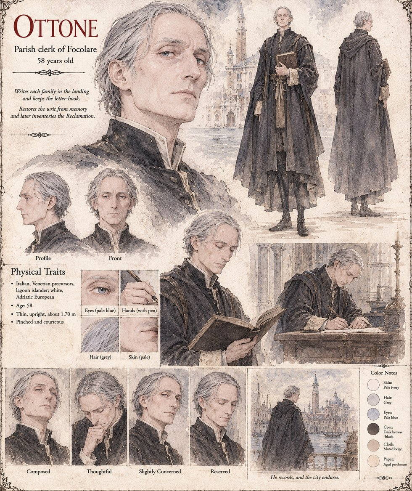

Ottone
Parish clerk of Focolare · keeper of the letter-book · forty years of clerkship · 58 on the sheet
The parish clerk of Focolare is a pinched and courteous man who had not been seen to hurry in twenty years, and he copies the covering note to the Order into the letter-book without altering a comma. On the fourth afternoon of the Translation, in the fifth boat, a brown nanny called Bianca eats the Order’s own sealed copy of the writ that licenses the removal of twelve hundred persons; the last of its eleven pages goes down in under a minute, and Ottone, dozing against a barrel, wakes to find her regarding him. He goes white, then grey, then entirely calm, and that evening by a stable lantern he restores the vanished pages from memory in a copperplate hand indistinguishable from the original. He had copied the writ into the letter-book once, four months earlier. At the landing he stands at the foot of the first gangplank, the book open on his forearm, and writes each family in as it passes, a single line apiece.
In the Reclamation of Nico’s estate he enters the jar of shells as worthless, assessed at two soldi without once looking at Agata, who begins laying the shells out in the Tide Game. He has never been asked to witness anything for which the forms provide no column, and after a very long time he lays his pen aside. When she comes back from the Line, her forehead bleeding, he has finished the inventory himself, says to the ledger that the two soldi were an error, and holds out the pen so that she can write worthless — see margin. Charged with the order of witnesses at the Inquest, he raises the matter of the sexton with the Legate, Gaudenzio Ferrante, in a voice of such diffidence that it takes him a quarter of an hour; the form rules a keeper of unaccounted ground out, and the Legate thanks him. Ubaldo is not called.
After the Great Lighting the foreigner Higaide comes to the parish office by daylight, and Ottone, who in forty years of clerkship never turns a petitioner away until he has been heard, takes a wax tablet and a stylus and listens for the better part of an hour. Higaide draws a brown husk, a flame and the husk open, then the plant in rows; “After fire,” said Higaide, “more.” Ottone says, slowly, that it will grow, puts down his pen, and carries the tablet to the Legate at Nones in both hands, the wax unwarmed. The Legate thanks the stranger for his interest. Ottone copies the whole exchange into the letter-book that evening, the first time anyone in the parish has put the matter in writing; It seemed to him that it ought to be written down by somebody. On the morning after the sixth taking, when Agata closes the rota-book, he takes the pen in her stead and writes the rota in a hand a good deal less forward-leaning. Once the Concord has reversed Nico’s Reclamation he carries his effects across the square in a basket, an item at a time, enters the whole as Restored, and writes against the cloak, in the column that had said two soldi for a jar of shells, beyond reckoning.
The manuscript gives him no age, only the twenty years without hurry and the forty years of clerkship; it calls him pinched and courteous and gives no height, build, hair or eye colour. The sheet’s age of 58, thin upright build of about 1.70 m, pale blue eyes, grey hair, pale skin, long dark coat and book under one arm are its own, as are its panels Composed, Thoughtful, Slightly Concerned and Reserved. Its two italic lines (he writes each family in at the landing and keeps the letter-book; he restores the writ from memory and later inventories the Reclamation) follow the manuscript, though the inventory of Nico’s estate is begun by Agata and finished by him. Its scene He records, and the city endures., with him at a balustrade before a lagoon city of domes and a campanile, is not in the manuscript, which keeps him in the valley.
“It seemed to him that it ought to be written down by somebody.”
Related Subjects


Related Records

On the ninth evening of the river, the first thing the settlers see of Val Muta is a graveyard: a low fence of split stakes, sixty-odd mounds, each marked with a flat river-stone, and at the far end a shovel planted upright in the ground. Ubaldo beside it lifts his hand, slowly, and waves. The goats come off the boats in a clattering, aggrieved flood, the boatmen carry the children ashore, and Ottone, at the foot of the first gangplank, writes each family in a single line apiece.